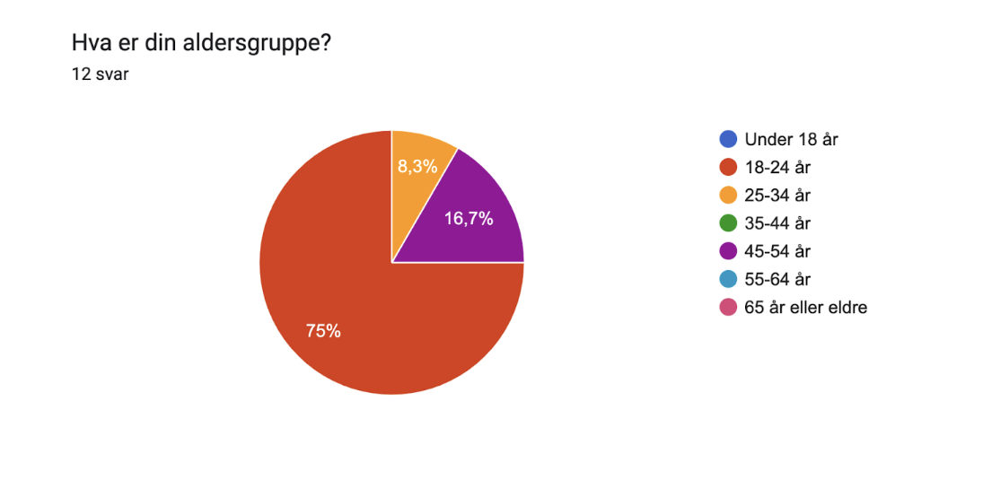
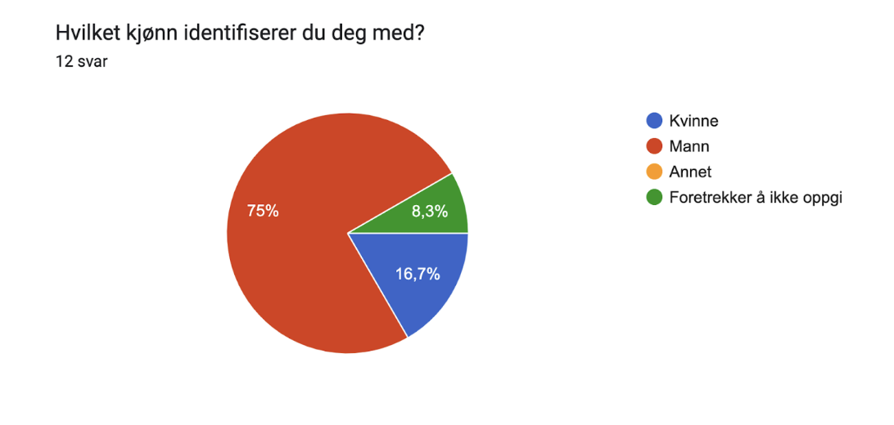
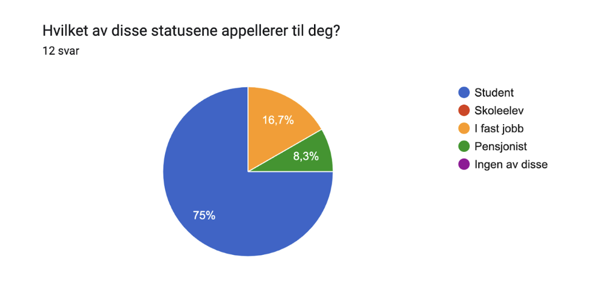
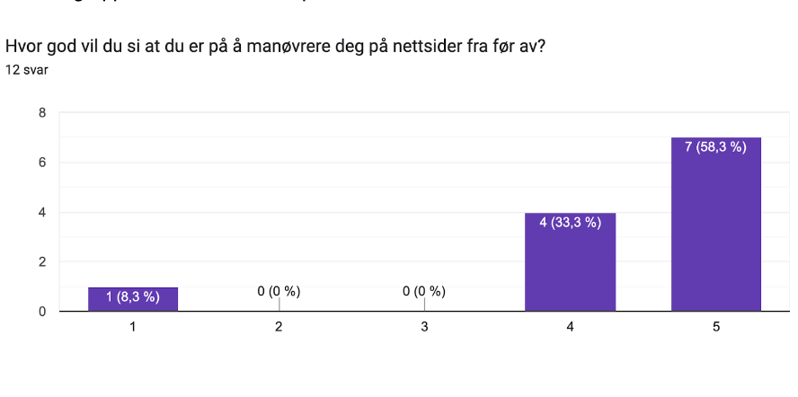

The name of our client is Morrofilm AS, a startup based in Trondheim, which focuses on challenging established companies in the sector through innovation,
lower prices, and hosting interactive events.
For å forstå og forbedre brukeropplevelsen av vår nettside, har vi utviklet en spørreundersøkelse. Undersøkelsen er anonym og fokuserer på å samle varierte perspektiver fra brukere av forskjellige aldre, kjønn og sivilstatuser. Dette hjelper oss med å få en bred forståelse av hvordan nettsiden vår fungerer for ulike brukergrupper.
Spørsmålene er designet for å dekke flere aspekter av brukeropplevelsen:
Hente inn data: Innhenter informasjon om brukerens aldersgruppe, kjønn og sivilstatus/livsstatus
Brukervennlighet: Spør om brukerens ferdigheter med nettsider, og deres opplevelse med navigasjon og bruk av funksjonaliteter i nettsiden.
Design og klarhet:Vurdering av designet og hvor klar og forståelig informasjonen i designet er.
Tilbakemeldinger: Åpner for at brukere kan skrive korte og lange svar om detaljerte tilbakemeldinger om eventuelle problemer, hva som er best med nettsiden og forslag til forbedringer.
Spørsmålene er en blanding av flervalgsspørsmål, kort svar, lange svar (avsnitt) og lineær skala.
For å sikre at vår nettside møter behovene til vår målgruppe, har vi gjennomført en målrettet rekruttering av testbrukere. Vi prioriterte å nå ut til individer som mest sannsynlig vil bruke nettsiden vår i deres daglige liv. Vi sendte vår undersøkelse til ulike venner, kollegaer og familie for å få en få ulike brukergrupper til å teste vår nettside.

Figur 1
75% av våre testere tilhørte denne gruppen, noe som indikerer en sterk tilknytning til yngre voksne og studenter.

Figur 2

Figur 3
En betydelig andel på 75% av testbrukerne var studenter, noe som stemmer godt overens med aldersgruppen som svarte mest på vår undersøkelse.

Figur 4
Samlet sett var innsatsen for å nå ut til en representativ testbrukergruppe vellykket, med en god blanding av aldersgrupper, kjønn og yrkesstatus. Som studenter selv, hadde vi størst tilgang til nettverk innenfor studentmiljøet, noe som naturlig påvirket sammensetningen av vår testbrukergruppe.
Testing Platforms
Blant våre testere var det varierende bruk av både mobil og PC, og noen testet også begge deler.
Oppsummering av respons
Design:
Figur 5
Av svarene vi fikk var det ingen som mente at designet på nettsiden var dårlig eller veldig dårlig. Halvparten mente det var middels, men resten mente det var bra eller veldig bra.
Navigasjon:
Figur 6
83,3% av våre testere hadde ingen problemer med navigasjonen på nettsiden, mens 16,7% hadde det.
Brukervennlighet
Figur 7
Her var spørsmålet om informasjonen på nettsiden var klar og lett å forstå. Igjen mener 83,3% at den var det, mens 16,7% er uenige.
Av de som var uenige, ble disse begrunnelsene gitt:
Først usikkert ka tjenesten er, ka betyr det å booke film? Er det en kino med kinobilletter, så opplys om det
Veldig grei for meg å forstå, men siden dere oppgir 65+ som et alternativt vil jeg si at ting kan ta tid å finne ut av. Der dere skriver "På siden "Filmer" ..." kan dere gjerne legge til en klikkbar lenke slik at gamlingene slipper å se rundt og bli forvirra.
Generell respons:
Figur 8
Ser av grafen at de fleste er relativt fornøyd med nettsiden, og at ingen er veldig misfornøyd. Likevel er det en som er relativt misfornøyd, og en som er veldig fornøyd. Noen er også middels fornøyde.
Hva likte du best med nettsiden?
Det går igjen hos flere at de er fornøyde med enkeltheten og oversiktligheten ved nettsiden. Flere var også fornøyde med de forskjellige popup-boksene.
Hvilke forbedringer vil du foreslå?
Oppsummert har flere av våre testere har lagt merke til at det er noe blanding av norsk og engelsk på nettsiden. For eksempel er mesteparten av teksten på norsk, mens “Current movies” og “Booking” er på engelsk.
Det går også igjen at flere ønsker en tydeligere bekreftelse på at bestillingen er gjennomført, i tillegg til et ønske om at valgt film automatisk er fylt ut når man booker gjennom filmsiden, isteden for at “After Work” alltid står oppført som default.
Noen ønsker også at Morrofilm AS har sin egen fanelogo, og generelt mer jobbing med å gjøre nettsiden mer moderne (fonter, logo, osv).
Your Responses
Det er flere ting vi kan gjøre for å forbedre brukeropplevelsen for våre brukere. Det første og viktigste vi kan ta tak i basert på tilbakemeldingene vi har fått er å gjøre endringer for å implementere en løsning for mobil. Dette er også en svakhet med hele testen, fordi vi ikke egentlig har utarbeidet nettsiden spesifikt for mobilskjermer, og da er det også uheldig at noen av testdeltakerene har vurdert nettsiden basert på noe som egentlig ikke var ment for testing. Hadde dette vært et reelt prosjekt, så måtte selvsagt dette også vært på plass, så det ville derfor ha vært et naturlig steg videre i utviklingen.
Det neste vi ville ha gjort er å legge til en JavaScript-funksjon som gjør at når man trykker på en film (under filmer) og går til booking-siden kommer den valgte filmen som den filmen man bestiller billetter til. Dette gjør nettsiden mer brukervennlig, og enklere å forstå, siden brukeren slipper å endre valgt film.
En annen endring som vil gjøre nettsiden enda mer forståelig er å legge til en funksjon i Javascript som gir en bedre beskjed om at bestillingen var vellykket. I dagens versjon kommer bekreftelsen under “oppsummering” lenger nede på siden. Et pop-up vindu ville f.eks ha en mer oppklarende effekt.
Det siste vi vil endre på er det generelle designet. I dette legger vi da for eksempel endringer i valgt font-stil, generell layout, samt en aldri så liten språkvask. Dette innebærer for eksempel å endre “booking” om til “bestill”, og “current movies” om til “filmer som går nå”. Vi har fått tilbakemelding på at logoen kan gjøres mer moderne, men dette kan være vanskelig å endre på, ettersom vi gjennomfører et oppdrag på vegne av en klient. Andre pekte på at det ble brukt for skarpe farger, og etterspurte et mer moderne uttrykk av den generelle layouten.
Self-Reflection
Etter å ha jobbet med dette prosjektet parallelt med den vanlige undervisningen og øvingsopplegget, har vi virkelig fått brukt det vi lærer i praksis, og også sett behovet etter andre metoder og funksjonaliteter enn det som inngår i den vanlige undervisningen i faget.
Dette har både vært utfordrende og lærerikt. Spesielt vanskelig var det kanskje å skulle planlegge et prosjekt etter å såvidt ha startet undervisningen i faget, men heldigvis er nettsider noe de fleste har et kjent forhold til, så det gikk fint.
Ved alle gruppearbeid så møter man også de klassiske problemene som å planlegge hvem som skal gjøre hva, til hvilken tid det skal gjøres, og så vil det naturligvis også oppstå uenigheter.
Til slutt skal prosjektet ende opp med et ferdig resultat, og da er det selvsagt viktig at de ulike komponentene henger sammen, selv om det er ulike personer som har hatt ansvar for ulike ting.
I et kode-prosjekt som dette så møter man definitivt på disse problemene, og man merker det kanskje ekstra godt i forhold til mange andre typer gruppearbeid. Siden alle filene som leveres kan påvirke hverandre så kan endringer gjort i en del av prosjektet, som egentlig ikke har noe med en annen del av prosjektet, likevel påvirke dette.
Vi har underveis benyttet oss av GitHub, og brukt ulike “branches” for å holde styr på de ulike konfliktene man kan møte på når flere jobber på noe samtidig. Dette har vært svært nyttig, i tillegg til lærerikt.
I tillegg til å jobbe sammen i et team, har også det å ha et prosjekt som man kan bruke det man har lært vært utrolig nyttig. Det har ikke bare øvd oss på å bruke det man har lært, men det har også skapt en motivasjon i faget for å nettopp lære nye ting, rett og slett fordi man ser at man faktisk vil komme til å ha nytte av det.
Til slutt så var det også nyttig å kunne samles igjen og kunne se det ferdige resultatet, og kunne få tilbakespill og innspill på dette. Hadde prosjektet vært mer realistisk er nok dette noe som burde vært gjort på et enda tidligere tidspunkt, men i rammene for dette prosjektet var ikke dette aktuelt.
Ser man hele prosjektet under ett vil vi definitivt si at vi har fått til et tilfredsstillende resultat. Det er absolutt rom for mye forbedringer, noe man ser tydelig fra tilbakemeldingene vi har fått.
Selv om gjennomsnittet av tilbakemeldinger er et sted mellom “middels” og “bra” er det nok viktig å få frem at dette er under antakelsen om at dette er et skoleprosjekt. Dersom dette faktisk skulle ha blitt en reell nettside er det nok mye arbeid som ville gjenstått.
Det viktigste med dette var likevel å få testet de grunnleggende funksjonalitetene til HTML, CSS og JavaScript, i tillegg til å lære seg å utvikle dette sammen med andre i et team. Dette er absolutt noe vi synes har vært vellykket.